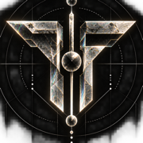

TALOS
Workbench
Vault
Sessions
Settings
deepseek/deepseek-v4.1-flash
Demo controls
Scripted runs over the real Talos vault. Nothing calls a model or leaves your browser.
Run speed
Slow
Normal
Fast
Reset the demo
GitHub
Session 1
New session
Back to now
Ask Talos
Enter to send, Shift+Enter for a new line
Send
Vault
Search the vault
All
Uses the web
Has failed
Tool
Uses
Failures
Last used
Gold names reach the web through a free API Talos found itself